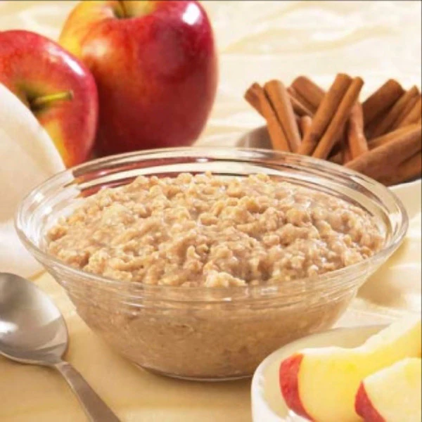

Corey's Oatmeal

Follow this recipe to create some delicious oatmeal which is high in
protein and soluble, whole grain carbs and low in calories and fat. It
is delicious and filling!
Ingredients
- 80g Oats
- 12oz Water
- 4g Creatine
- 16g Optimum Nutrition Vanilla Casein
- 2.5oz almond milk
- Cinnamon
- 8g Brown Sugar
Instructions
- Add oatmeal and water to microwave safe bowl.
- Microwave for 2m30s and stir.
- Microwave in 15-30s increments until thoroughly cooked.
- Let sit for several minutes to fully absorb.
- Add casein and almond milk delicately on top of the oatmeal.
- Mix thoroughly on top of the oatmeal without breaking the oatmeal
"seal" (should look like a pudding on top).
- Stir the oatmeal and the casein pudding together thoroughly.
- Add Cinnamon and Brown Sugar, mix thoroughly, and enjoy!
Home